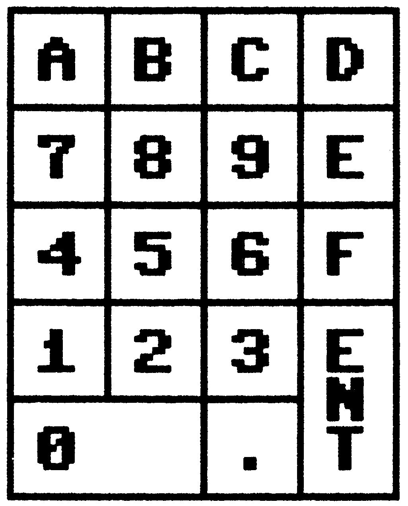
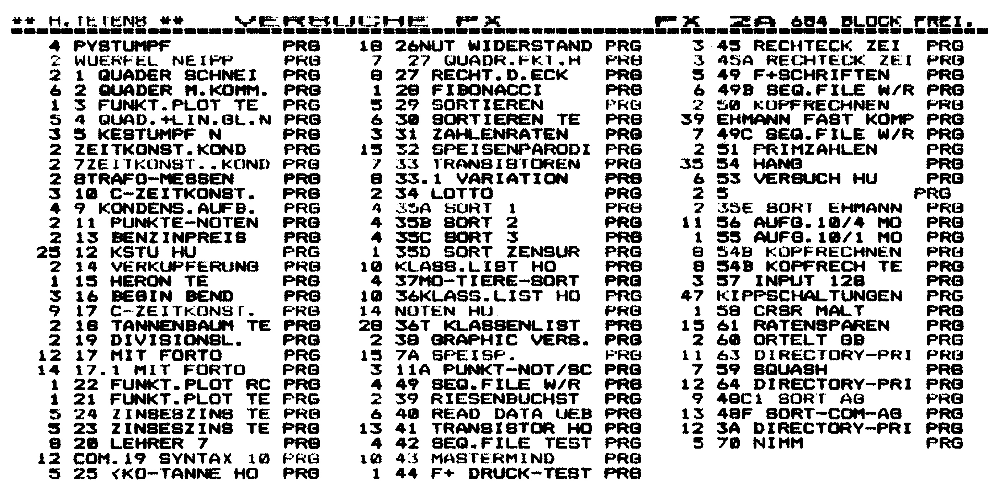
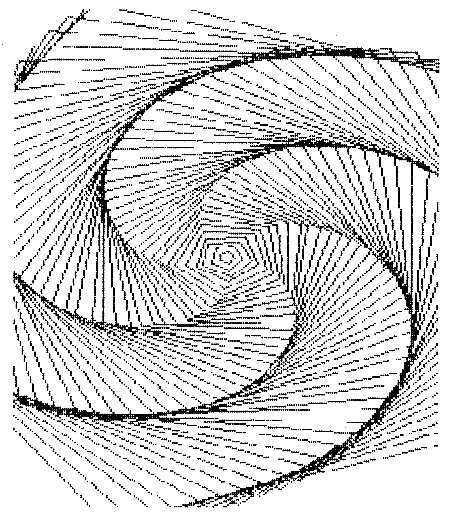

Tips & Tricks zum C 128
Vielseitige Hilfen und Erweiterungen erhalten Sie regelmäßig in den Tips & Tricks. Neben vielen nützlichen Programmen sind diesmal ein komfortabler RENUMBER-Befehl, eine 80-Zeichen-Hardcopy mit vielen Finessen und ein leistungsfähiger DATA-Wandler dabei.
Dem C 128 fehlen noch viele nützliche Befehle und Erweiterungen. Die Rubrik »Tips & Tricks« gibt Ihnen Hilfen, neue Basic-Befehle und allerlei nützliche Programme an die Hand, die von Profis extra für Sie geschrieben wurden, um Ihnen das Arbeiten zu erleichtern.
LIST-Hilfe für Basic-Programme
Dieses Programm (Listing 1) ermöglicht ein LISTen von Programmzeilen mit Hilfe der <CRSR>-Tasten. So wird ein unmittelbares Editieren von Programmzeilen möglich, die dauernde Eingabe von zum Beispiel »LIST 80-134« überflüssig. Das Programm belegt etwas mehr als 400 Byte im Kassetten- und RS232-Eingabepuffer.
Das Programm wird mit
BLOAD"LIST-HILFE"geladen und durch
BANK 15:SYS 2816gestartet. Das Programm belegt nun die Taste <F1> mit dem Text:
BANK 15:SYS 2816so daß bei mehrmaliger Initialisierung nur <F1> gedrückt werden muß.
Die Routine läßt sich mit <RUN/STOP+RESTORE> abschalten.
Eine gleichzeitige Benutzung des Kassettenpuffers oder der RS232-Schnittstelle ist nicht möglich, da das Programm die Puffer ab $0B00 belegt. Durch Änderung weniger Adressen ist es jedoch leicht möglich, die Routine in einen anderen Speicherbereich der BANK 15 zu verschieben.
Während der normalen Programmier-Tätigkeit macht sich das Programm nicht bemerkbar. Wird der Cursor jedoch über den oberen oder unteren Bildschirmrand hinausbewegt, tritt das Programm in Aktion.
Steht auf dem sichtbaren Bildschirm eine Zeilennummer am linken Rand, wird entweder am unteren Bildschirmende die Folgezeile oder am oberen Bildschirmrand die vorhergehende Basic-Zeile angezeigt.
Steht auf dem Bildschirm keine Zeilennummer oder ist die erste beziehungsweise letzte Zeile gelistet, scrollt der Bildschirm auf- oder abwärts.
Wurde das Scrollen durch <ESC> + <M> unterbunden, wird die entsprechende Basic-Zeile ohne Zeilenverschiebung oben beziehungsweise unten in den Bildschirm geschrieben, soweit die Zeile hineinpaßt.
Findet der Editor keine Zeilennummer, springt der Cursor bei <ESC>+<M> von der ersten in die letzte Bildschirmzeile und umgekehrt (auch dies ist eine Erweiterung der normalen Funktion).
Das Programm funktioniert auf dem 40- und 80-Zeichen-Bildschirm sowie bei jeder beliebigen Fenstergröße.
Funktion der Routine
Die Startroutine bei $0B00 (2816) verbiegt den Vektor »TASTENDRUCK SPEICHERN« ($33C/$33D), die der Systeminterrupt alle 1/60 Sekunde aufruft. Wird keine Cursortaste erkannt, verzweigt die Routine in die normale Abfrage. Andernfalls versucht das Programm festzustellen, ob eine Zeilennummer auf dem Bildschirm steht und ob es eine Folgezeile oder vorhergehende Zeile im Basic-Programm gibt (die genaue Funktion dieser Abfrage entnehmen Sie bitte dem kommentierten Quellcode aus Listing 2).
Der Zeiger $3FF wird bei Programmbeginn als Flag gesetzt. Wenn er gesetzt ist, wird das Programm nicht erneut angesprungen. Dies ist notwendig, da das LISTen einer Basic-Zeile häufig länger als 1/60 Sekunde dauert. Die Routine würde sich dann immer wieder selbst aufrufen, was zu einer Endlosschleife oder Programmabsturz führt.
(Ralf Pfeiffer/dm). 00b00 a9 80 lda #$80 Initialisierungsroutine
. 00b02 a2 0b ldx #$0b Verbiegung des Vektors "Tastendruck speichern"
. 00b04 8d 3c 03 sta $033c
. 00b07 8e 3d 03 stx $033d
. 00b0a a9 8f lda #$8f Belegung von F1 mit "bank15:sys2816"
. 00b0c a2 0c ldx #$0c zur Initialisierung nach Run/Stop - Restore
. 00b0e 85 fc sta $fc
. 00b10 86 fd stx $fd
. 00b12 a2 00 ldx #$00
. 00b14 8e ff 03 stx $03ff
. 00b17 e8 inx
. 00b18 a0 0f ldy #$0f
. 00b1a a9 fc lda #$fc
. 00b1c 4c 65 ff jmp $ff65
. 00b1f 18 clc überprüfung des Akku auf Ziffer
. 00b20 c9 3a cmp #$3a
. 00b22 b0 05 bcs $0b29
. 00b24 e9 2f sbc #$2f
. 00b26 38 sec C-Flag wird gesetzt, wenn keine Ziffer
. 00b27 e9 d0 sbc #$d0
. 00b29 60 rts
. 00b2a a2 00 ldx #$00 Integerzahl vom Bildschirm holen (Cursor-
. 00b2c 86 0a stx $0a position) nach $16/ $17
. 00b2e 86 16 stx $16 ähnlich der Routine im Basic-Interpreter ab
. 00b30 86 17 stx $17 $f50a0
. 00b32 e6 0a inc $0a
. 00b34 e9 2f sbc #$2f
. 00b36 85 09 sta $09
. 00b38 a5 17 lda $17
. 00b3a 85 24 sta $24
. 00b3c a5 16 lda $16
. 00b3e 0a asl
. 00b3f 26 24 rol $24
. 00b41 0a asl
. 00b42 26 24 rol $24
. 00b44 65 16 adc $16
. 00b46 85 16 sta $16
. 00b48 a5 24 lda $24
. 00b4a 65 17 adc $17
. 00b4c 85 17 sta $17
. 00b4e 06 16 asl $16
. 00b50 26 17 rol $17
. 00b52 a5 16 lda $16
. 00b54 65 09 adc $09
. 00b56 85 16 sta $16
. 00b58 90 02 bcc $0b5c
. 00b5a e6 17 inc $17
. 00b5c 20 54 c8 jsr $c854 Cursor rechts
. 00b5f 20 58 cb jsr $cb58 Zeichen unter Cursor in Akku holen
. 00b62 85 fa sta $fa
. 00b64 18 clc
. 00b65 20 20 0b jsr $0b20 Akku auf Ziffer prüfen
. 00b68 90 c8 bcc $0b32 die Routine, wird wiederholt, solange Ziffern
. 00b6a 60 rts aufeinanderfolgen
. 00b6b ea nop
. 00b6c ea nop
. 00b6d ea nop
. 00b6e a5 eb lda $eb die Cursorpostion wird in $fb/ $fc zwischen-
. 00b70 a4 ec ldy $ec gespeichert
. 00b72 85 fb sta $fb
. 00b74 84 fc sty $fc
. 00b76 60 rts
. 00b77 a5 fb lda $fb der Cursor wird auf die Ausgangsposition gesetzt
. 00b79 a4 fc ldy $fc
. 00b7b 84 ec sty $ec
. 00b7d 4c 38 c9 jmp $c938
die gedrückte Taste wird überprüft
. 00b80 85 fe sta $fe die gedrückte Taste wird zwischengespeichert
. 00b82 a6 f4 ldx $f4
. 00b84 d0 18 bne $0b9e springt, wenn Quote-Modus angeschaltet ist
. 00b86 ae ff 03 ldx $03ff Zeiger auf "Unterprogramm ist aktiv"
. 00b89 d0 7c bne $0c07 springt, wenn Unterprogramm noch aktiv
. 00b8b c0 07 cpy #$07 Code für untere Cursortaste
. 00b8d d0 09 bne $0b98
. 00b8f a5 d3 lda $d3 Speicher für Shift-Taste
. 00b91 29 01 and #$01
. 00b93 f0 0b beq $0ba0
. 00b95 4c 19 0c jmp $0c19 "Cursor up" ist gedrückt
. 00b98 c0 53 cpy #$53 Code für "Cursor up"
. 00b9a f0 f9 beq $0b95
. 00b9c c0 54 cpy #$54 Code für "Cursor down"
. 00b9e d0 67 bne $0c07
. 00ba0 18 clc Hauptprogramm "Cursor down"
. 00ba1 a6 eb ldx $eb
. 00ba3 e4 e4 cpx $e4
. 00ba5 90 60 bcc $0c07 springt, wenn Cursor nicht unten im Fenster
. 00ba7 ee ff 03 inc $03ff Setzt Hilfszeiger
. 00baa 20 6e 0b jsr $0b6e Cursorposition speichern
. 00bad 20 9f cd jsr $cd9f Cursor ausschalten
. 00bb0 24 f8 bit $f8
. 00bb2 30 03 bmi $0bb7
. 00bb4 20 bc ca jsr $cabc "Scroll up", falls scrollen erlaubt
. 00bb7 20 b1 cb jsr $cbb1 Cursor an den Anfang der Zeile
. 00bba 20 58 cb jsr $cb58 Zeichen vom Bildschirm holen
. 00bbd 20 1f 0b jsr $0b1f Zeichen = Ziffer ?
. 00bc0 90 0d bcc $0bcf springen bei Ziffer
. 00bc2 18 clc
. 00bc3 a6 e5 ldx $e5 Cursor schon in erster Fensterzeile ?
. 00bc5 e4 eb cpx $eb
. 00bc7 b0 45 bcs $0c0e ja, dann zum normalen Programm springen
. 00bc9 20 70 c8 jsr $c870 Cursosr up
. 00bcc 4c b7 0b jmp $0bb7
Ziffer am linken Bildschirmrand gefunden
. 00bcf 18 clc
. 00bd0 20 2a 0b jsr $0b2a gefundene Zahl lesen, nach Integer wandeln und
. 00bd3 e6 16 inc $16 in $16/ $17 ablegen
. 00bd5 d0 02 bne $0bd9 Zahl um 1 erhöhen
. 00bd7 e6 17 inc $17
. 00bd9 20 64 50 jsr $5064 Anfang der Basic-Zeile suchen, oder Anfang der
. 00bdc b0 02 bcs $0be0 nächsten Zeile, falls sie nicht exisitiert
. 00bde f0 1d beq $0bfd letzte Basiczeile überschritten, dann Ende
. 00be0 a0 02 ldy #$02
. 00be2 20 ec 42 jsr $42ec Zeilennummer der gefundenen Basic-Zeile in
. 00be5 85 16 sta $16 $16/ $17 ablegen
. 00be7 c8 iny
. 00be8 20 ec 42 jsr $42ec
. 00beb 85 17 sta $17
. 00bed a5 fb lda $fb
. 00bef a4 e6 ldy $e6 Cursor unten links auf den Bildschirm setzen
. 00bf1 84 ec sty $ec
. 00bf3 20 38 c9 jsr $c938
. 00bf6 a5 17 lda $17
. 00bf8 a6 16 ldx $16
. 00bfa 20 23 51 jsr $5123 Basic-Zeile listen
. 00bfd a9 00 lda #$00
. 00bff 85 fe sta $fe
. 00c01 20 77 0b jsr $0b77 alte Cursorpositon holen
. 00c04 4e ff 03 lsr $03ff Hilfszeiger löschen
. 00c07 a4 d4 ldy $d4
. 00c09 a5 fe lda $fe
. 00c0b 4c ad c6 jmp $c6ad in normale Routine springen (Tastencode zwischen-
speichern)
. 00c0e 24 f8 bit $f8 Cursor an den oberen Rand setzen, falls scrollen
. 00c10 10 04 bpl $0c16 verboten
. 00c12 a6 e5 ldx $e5
. 00c14 86 fb stx $fb
. 00c16 4c fd 0b jmp $0bfd
Hauptprogramm "Cursor up"
. 00c19 18 clc
. 00c1a a6 e5 ldx $e5
. 00c1c e4 eb cpx $eb
. 00c1e d0 e7 bne $0c07 springt, wenn Cursor nicht unten im Fenster
. 00c20 ee ff 03 inc $03ff Setzt Hilfszeiger
. 00c23 20 9f cd jsr $cd9f Cursor ausschalten
. 00c26 24 f8 bit $f8
. 00c28 30 03 bmi $0c2d
. 00c2a 20 ca ca jsr $caca "Scroll down", falls scrollen erlaubt
. 00c2d 20 6e 0b jsr $0b6e Cursorposition speichern
. 00c30 20 50 c1 jsr $c150 "Cursor home"
. 00c33 20 58 cb jsr $cb58 Zeichen vom Bildschirm holen
. 00c36 20 1f 0b jsr $0b1f Zeichen = Ziffer ?
. 00c39 90 0d bcc $0c48 springen, bei Ziffer
. 00c3b 18 clc
. 00c3c a6 eb ldx $eb Cursor schon in letzter Fensterzeile ?
. 00c3e e4 e4 cpx $e4
. 00c40 b0 42 bcs $0c84 ja, dann zum normalen Programm springen
. 00c42 20 77 c3 jsr $c377 Cursosr down
. 00c45 4c 33 0c jmp $0c33
Ziffer am linken Bildschirmrand gefunden
. 00c48 20 2a 0b jsr $0b2a gefundene Zahl in $16/ $17 ablegen
. 00c4b 20 64 50 jsr $5064 Anfang der Basic-Zeile suchen
. 00c4e a5 61 lda $61 ist Basic-Zeile die erste Zeile ?
. 00c50 a6 62 ldx $62
. 00c52 c5 2d cmp $2d
. 00c54 d0 04 bne $0c5a
. 00c56 e4 2e cpx $2e
. 00c58 f0 a3 beq $0bfd ja, dann Ende
. 00c5a 85 63 sta $63 Zeilenanfang zwischenspeichern
. 00c5c 86 64 stx $64
. 00c5e c6 62 dec $62 Anfang der vorhergehenden Zeile suchen
. 00c60 a0 00 ldy #$00
. 00c62 c8 iny
. 00c63 f0 98 beq $0bfd nicht gefunden, dann Ende
. 00c65 20 ec 42 jsr $42ec Zeichen aus Bank 0 holen, Adresse in $61/ $62
. 00c68 c5 63 cmp $63
. 00c6a d0 f6 bne $0c62
. 00c6c c8 iny
. 00c6d 20 ec 42 jsr $42ec
. 00c70 88 dey
. 00c71 c5 64 cmp $64
. 00c73 d0 ed bne $0c62
. 00c75 18 clc Anfang der vorhergehenden Zeile gefunden
. 00c76 98 tya
. 00c77 65 61 adc $61 Zeilenanfang berechnen und in $61/ $62 ablegen
. 00c79 85 61 sta $61
. 00c7b a9 00 lda #$00
. 00c7d 65 62 adc $62
. 00c7f 85 62 sta $62
. 00c81 4c e0 0b jmp $0be0 gefundene Basic-Zeile listen
. 00c84 24 f8 bit $f8 Cursor an den unteren Rand setzen, falls
. 00c86 10 04 bpl $0c8c scrollen verboten
. 00c88 a6 e4 ldx $e4
. 00c8a 86 fb stx $fb
. 00c8c 4c fd 0b jmp $0bfd
C 64-Modus mit 2 MHz
»Blanker C64Mode« (Listing 3) wird mit dem MSE im C 64-Modus eingegeben und durch SYS 49152 gestartet. Wenn Sie dann <CTRL+B> kurze Zeit gedrückt halten, schaltet sich der FAST-Mode (2-MHz-Betrieb) ein. Dies macht sich durch ein Abschalten des Bildschirms bemerkbar. In diesem Zustand läuft der C 128 in beiden Betriebsarten (C 64 und C 128) doppelt so schnell, womit man Compiler oder langwierige Berechnungen in Basic beschleunigen kann (etwa das Einlesen von DATA-Werten oder das Zeichnen hochauflösender Grafik).
Nochmaliges Drücken von <CTRL+B> schaltet wieder auf normale Geschwindigkeit. Durch <RUN/STOP+RESTORE> wird der Blanker abgeschaltet (Neustart durch SYS 49152).
Noch zwei wichtige Hinweise: BLANKER läuft nur auf dem C 128 im C 64-Modus. Außerdem darf der FAST-Modus bei Ansteuerung von Peripheriegeräten nicht eingeschaltet sein, da dies zu I/O-Fehlern führt.
Assembler-Freaks können aus dem kommentierten Assembler-Listing (Listing 4) interessante Informationen entnehmen.
(Florian Müller/dm)100 -; *** BLANKER C64-MODE *** 110 -; *** ================ *** 120 -; 200 -.EQ IRQVEC = $0314 ; IRQ-VEKTOR 210 -.EQ TASTE = $CB ; AKTUELLER TASTENCODE 220 -.EQ ALTIRQ = $EA31 ; ADRESSE DER ALTEN IRQ-ROUTINE 230 -.EQ BLANK1 = $D011 ; VIC-REGISTER #17 240 -.EQ BLANK2 = $D030 ; VIC-REGISTER #48 250 -.EQ CTRLFL = $028D ; FLAG FUER SHIFT,C=,CTRL 260 -.EQ ZAEHL = $B6 ; ZAEHLER 270 -; 280 -.BA $C000 ; AB 49152 ABLEGEN 290 -; 300 -; 310 -; INITIALISIERUNG DER NEUEN IRQ-ROUTINE 320 -; 330 - SEI ; INTERRUPT ABSCHALTEN 340 -; 350 - LDA #<(NEUIRQ) ; IRQ-VEKTOR 360 - LDY #>(NEUIRQ) ; AUF NEUE 370 - STA IRQVEC ; IRQ-ROUTINE 380 - STY IRQVEC+1 ; STELLEN 390 -; 400 - LDA #30 410 - STA ZAEHL ; ZAEHLER SETZEN 400 -; 410 - CLI ; INTERRUPT WIEDER EINSCHALTEN 420 - RTS ; ENDE DER INITIALISIERUNG 430 -; 440 -NEUIRQ LDX ZAEHL 450 - DEX 460 - STX ZAEHL ; ZAEHLER DEKREMENTIEREN 470 - BMI PRUEF 480 -ENDEIRQ JMP ALTIRQ ; WEITER WIE BEI ALTEM IRQ 485 -; 490 -PRUEF LDA #30 500 - STA ZAEHL ; ZAEHLER WIEDER SETZEN 505 -; 510 - LDA TASTE 520 - CMP #28 ; AUF "B" PRUEFEN 530 - BNE ENDEIRQ ; ENDE WENN <> "B" 535 -; 540 - LDA #4 ; BIT FUER "CTRL" GESETZT 550 - BIT CTRLFL ; AUF CTRL-TASTE PRUEFEN 560 - BEQ ENDEIRQ ; NICHT CTRL GEDRUECKT, DANN ENDE 565 -; 570 - LDA BLANK1 580 - EOR #16 ; BLANK-BIT FLIPPEN 590 - STA BLANK1 ; UND ABSPEICHERN 595 -; 600 - LDA BLANK2 610 - EOR #1 ; FAST-BIT INVERTIEREN 620 - STA BLANK2 ; UND ABSPEICHERN 625 -; 630 - JMP ALTIRQ ; WEITER BEIM ALTEN IRQ
10er-Block auch im C 64-Modus
Wer einen C 128 besitzt und diesen im C 64-Modus benutzt, dem wird bestimmt schon aufgefallen sein, daß der 10er-Block und die zusätzlichen Cursortasten nicht ansprechbar sind. Das hier abgedruckte Maschinenprogramm (Listing 5, bitte mit dem MSE im C 64-Modus eingeben) behebt dieses kleine Übel.
Der Video-Chip im C 128 unterscheidet sich von seinem Vorgänger unter anderem dadurch, daß er einen 3-Bit-Port besitzt, ähnlich dem in der CPU oder in den CIAs. Dieser Port hat im C 128 die Aufgabe, die zusätzlichen Ziffern-, Cursor- und Steuertasten abzufragen.
Die im C 64-Modus nutzbare Tastatur ist über je acht Spalten- und Zeilenleitungen mit den beiden Ports des CIA 1 verbunden. Die fehlenden drei Zeilenleitungen für die Zusatztasten werden am VIC angeschlossen. Aus Kompatibilitätsgründen ist diese Tastatur im C 64-Modus nicht aktiv, denn das Betriebssystem müßte ja diesen VIC-Port unterstützen. Genau hier greift 10ER-TAST ein.
Der Interrupt-Vektor wird auf die neue Routine verbogen und die normale Tastatur vorerst »abgeklemmt«. Nun legt das Programm alle drei Tastaturzeilen im VIC auf LOW. Ist eine der Zusatztasten gedrückt, so erscheint an CIA 1, Port B, etwas anderes als $FF. Ist dies der Fall, werden nacheinander alle drei Zeilen einzeln auf LOW gelegt und überprüft, ob diese Zeile angesprochen wurde.
Ist die Zeile mit der gedrückten Taste gefunden, wird noch ermittelt, in welcher Spalte die Taste liegt. Aus den Werten für Zeile und Spalte errechnet sich die Position des zugehörigen ASCII-Zeichens in der Tastaturtabelle. Dieser Code wird nun in den Tastaturpuffer gebracht und erscheint danach auf dem Bildschirm.
Der Start des Programms erfolgt durch SYS 49152. Sofort ist der gesamte Zehnerblock im C 64-Modus nutzbar.
(Achim Kalwa/dm)Variablen-Übersicht
Mit dem Programm »XLV 3.6« (Listing 6) werden sämtliche Variablen, die ein Programm verwendet, sortiert auf dem Drucker ausgegeben. Zu jeder Variable werden sämtliche Zeilennummern, in denen die Variable vorkommt, mit ausgegeben.
Die Unterteilung der Variablen erfolgt in die vier Gruppen Systemvariable und Konstanten, numerische Gleitkomma-Variable, numerische Ganzzahl-Variable und Zeichenketten-Variable.
Für jede Gruppe können je 51 Variable und für jede Variable je 127 Zeilennummern verarbeitet werden. Zum Anschluß eignet sich jeder beliebige Drucker (auf die Verwendung druckerspezifischer Steuerkommandos wurde verzichtet).
Bedienung
Das Programm ist durch
RUN"XLV*"zu starten. Mit »$« können alle Programme auf der Diskette angezeigt werden.
Gewünschten Programmnamen eingeben. (Bei Programmnamen mit mehr als 14 Zeichen bitte mit »*« abkürzen, da sonst ein STRING TOO LONG-Error auftritt.)
Sofern der Drucker noch nicht eingeschaltet ist, wird dies nun angezeigt. Ist der Drucker bereit, so werden die Variablen sortiert ausgedruckt.
(R. Vogel/dm)10 P$="XLV 3.6": REM 09.07.86 * R. VOGEL * C
H-8887 MELS
20 TRAP 830: DCLOSE : COLOR 0,1: COLOR 4,1:
PRINT "{2HOME,CLR}";: E$=CHR$(27): CR$=CH
R$(13)
30 IF PEEK(215)>0 THEN FAST : CHAR 1,18,0,E$
+"T"
40 T0$="{5SPACE}****************************
*****************************************
**** "
50 PRINT "{WHITE}VARIABLEN UEBERSICHT{4SPACE
}"P$CR$ MID$(T0$,6,31)CR$"{PURPLE}'$' = D
IRECTORY{2SPACE}'E'=ENDE{DOWN}"
60 OPEN 3,0: DIM TA$(52,3): DIM T$(3): GOTO
120
70 REM #### SUB READ ####
80 GET #1,X$: S%=ST: X%=ASC(X$): RETURN
90 PRINT CR$"{3UP}"E$"Q{CTRL+G}'"F$"'IST KEI
N BASIC PGM{DOWN}": GOTO 120
100 PRINT CR$"{3UP}"E$"Q{CTRL+G}PGM '"F$"' N
ICHT GEFUNDEN{DOWN}"
110 REM #### START PGM ####
120 DCLOSE : PRINT "PGM-NAME ODER '$': ";: I
NPUT#3,F$: IF F$="E" THEN 800
130 IF F$="$" THEN PRINT "{WHITE}": CATALOG
"*=P"
135 IF F$="$" THEN PRINT "{PURPLE}'RET' = WE
ITER";: GET KEY Y$: CLR : GOTO 10
140 DOPEN #1,(F$)+",P": IF DS>0 THEN 100
150 GOSUB 80: IF X%<>1 THEN 90
160 GOSUB 80: IF X%<>28 THEN 90: ELSE E%=1:
M%=1
170 PRINT CR$"{DOWN}BITTE GEDULD"
180 REM #### LOOP PGM LESEN ####
190 DO UNTIL S%>0: GOSUB 80: IF E% THEN 290
200 IF R% AND X%>0 THEN 330
210 IF Q% AND X%<>34 AND X%>0 THEN 330
220 IF X%=34 AND Q%=0 THEN Q%=1: P%=1: M%=0:
GOTO 260
230 IF X%=34 THEN Q%=0: M%=1: GOTO 330
240 IF X$=":" THEN M%=0: PRINT "{LIG.GREEN}:
";: GOTO 260
250 IF(X%<255 AND X%>127) OR X%<32 THEN : M%
=0: IF X%=143 THEN R%=1: P%=1: PRINT "{L
IG.RED}REM";
260 GOSUB 350: IF P% THEN P%=0: GOTO 330
270 IF X$=":" OR(X%<255 AND X%>127) OR X%<32
THEN M%=1
280 IF X%>0 THEN 330
290 E%=E%+1: ON E% GOTO 330,330,330,300,310
300 Z0$=CHR$(X%): W%=X%: GOTO 330
310 Z1$=CHR$(X%): W%=W%+256*X%: E%=0: Q%=0:
R%=0
320 CHAR 1,0,8,E$+"D": CHAR 1,0,22,"{LIG.BLU
E}": PRINT USING "#####";W%;: PRINT " ";
330 LOOP : DCLOSE : GOTO 600
340 REM #### VARIABLEN SUCHEN ####
350 IF M% THEN Z%=Z%+1: ELSE GOTO 460
360 IF Z%=1 AND((X$=>"A" AND X$=<"Z") OR X%=
255) THEN Z$=X$: L%=1: RETURN
370 IF Z%=1 THEN Z%=0: RETURN
380 IF X$="(" THEN Z$=Z$+X$: GOTO 460
390 IF X$="%" OR X$="$" THEN Z$=Z$+X$: L%=2:
A%=1: RETURN
400 IF(X$>="0" AND X$<="9") OR(X$>="A" AND X
$<="Z") THEN 420
410 GOTO 460
420 IF A% THEN GOSUB 460: GOTO 350
430 IF L%=1 THEN Z$=Z$+X$: L%=2
440 RETURN
450 REM #### BUFFER SCHREIBEN ####
460 IF Z%=0 THEN RETURN
470 VA$=":{4SPACE}": MID$(VA$,2)=Z$: Z%=0: A
%=0: ZL$=Z1$+Z0$
480 IF INSTR(":DS{2SPACE}:DS$ :EL{2SPACE}:ER
{2SPACE}:↑{3SPACE}:ST{2SPACE}:TI{2SPACE}
:TI$ ",VA$)>0 THEN
PRINT "{YELLOW}*";: V%=0: GOTO 510
490 IF INSTR(VA$,"$")>0 THEN PRINT "{YELLOW}
$";: V%=3: GOTO 510
500 IF INSTR(VA$,"%")>0 THEN PRINT "{YELLOW}
%";: V%=2: ELSE PRINT "{YELLOW}#";: V%=1
510 T%=INSTR(T$(V%),VA$): IF T%=0 THEN T$(V%
)=T$(V%)+VA$: GOTO 510
520 I%=(T%-1)/5: IF RIGHT$(TA$(I%,V%),2)=ZL$
THEN 540
530 TA$(I%,V%)=TA$(I%,V%)+ZL$
540 RETURN
550 REM #### DRUCKER NICHT READY ####
560 CLOSE 4: CHAR 1,0,8,E$+"D"+E$+"D"
570 CHAR 1,0,21,"{PURPLE}BITTE DRUCKER EINSC
HALTEN UND"+CR$+"'RET' DRUECKEN.{2SPACE}
(E=ENDE)"
580 GET KEY Y$: IF Y$="E" THEN 790
590 REM #### BUFFER DRUCKEN ####
600 OPEN 4,4: PRINT#4,"{5SPACE}PROGRAMMNAME
:{3SPACE}"F$: PRINT#4,T0$
610 IF ST<>0 THEN 560: ELSE PRINT#4
620 FOR V=0 TO 3: IF T$(V)="" THEN 780
630 PRINT#4,"{5SPACE}";
640 IF V=0 THEN PRINT#4,"SYSTEMVARIABLEN UND
KONSTANTEN";
650 IF V=1 THEN PRINT#4,"NUMERISCHE GLEITKOM
MA VARIABLEN";
660 IF V=2 THEN PRINT#4,"NUMERISCHE GANZZAHL
VARIABLEN";
670 IF V=3 THEN PRINT#4,"ZEICHENKETTEN VARIA
BLEN";
680 PRINT#4," :": PRINT#4,T0$
690 FOR I=0 TO LEN(T$(V))/5-1
700 Y$="↑↑↑↑": FOR Y=0 TO LEN(T$(V))/5-1
710 IF Y$>MID$(T$(V),Y*5+2,4) THEN Y$=MID$(T
$(V),Y*5+2,4): Y%=Y
720 NEXT Y: MID$(T$(V),Y%*5+2,4)="↑↑↑↑": PRI
NT#4,Y$" -";
730 FOR J=0 TO LEN(TA$(Y%,V))/2-1
740 IF INT(J/12)=J/12 AND J>0 THEN PRINT#4:
PRINT#4,"{5SPACE}-";
750 PRINT#4,USING "######";(ASC(MID$(TA$(Y%,
V),J*2+1,1))*256)+ASC(MID$(TA$(Y%,V),J*2
+2,1));
760 NEXT J: PRINT#4: PRINT#4
770 NEXT I: PRINT#4: PRINT#4
780 NEXT V: CLOSE 4
790 PRINT CR$"{PURPLE}FERTIG! 'RET'=ENDE{2SP
ACE}'R'=RESTART": GET KEY Y$: IF Y$="R"
THEN CLR : GOTO 10
800 FF$="MENU": DOPEN #2,(FF$): DCLOSE : IF
DS=0 THEN RUN "MENU"
810 PRINT "{CLR}";: END
820 REM #### ERROR ####
830 PRINT "{CLR,PURPLE}*** ERROR *** " ERR$(
ER)" IN LINIE "EL;
840 HELP : PRINT
850 PRINT "'RET'=RETRY (RESUME), SONST = ABB
RUCH ";: GET KEY Y$
860 IF Y$=CHR$
80-Zeichen-Hardcopy
Für den 40-Zeichen-Modus gibt es genug Hardcopy-Programme, die man nötigenfalls auch umschreiben kann. Für den 80-Zeichen-Modus sind jedoch spezielle Hardcopy-Routinen nötig, die es aber derzeit noch nicht so häufig gibt. Mit diesem Programm »VDCHC.0C00« (Listing 7, bitte mit dem MSE im C 64-Modus eingeben) erhalten Sie eine 80-Zeichen-Hardcopy-Routine mit folgenden Vorzügen:
— Die Attribute »zweiter Zeichensatz an« (Bit 7), »Revers« (Bit 6) und »Unterstrichen« (Bit 5) des Attributspeichers werden mit berücksichtigt. Sollte der Attributspeicher abgeschaltet sein (Bit 6 des VDC-Registers 25 ist Null), erkennt dies das Programm und ignoriert die Attribute.
— Veränderte Adressen für Bildschirmspeicher (Register 12), Attributspeicher (Register 20) und Zeichensatz (Register 28, Bits 5 bis 7) werden berücksichtigt. Die Hardcopy-Routine wertet die Register 13 und 21 nicht aus, da das Betriebssystem des C 128 nur eine Verschiebung um ganze Speicherseiten (Page) vorsieht.
— Auch veränderte oder selbst erstellte Zeichensätze werden erkannt und ausgedruckt. Das Programm arbeitet beim Ausdruck grundsätzlich im Bitmap-Modus (640-Pixel-Grafik bei Epson-Druckern und Kompatiblen) und holt die Bitmuster-Daten nicht aus dem Zeichensatz-ROM, sondern aus dem VDC-RAM.
— Ebenfalls verarbeitet die Routine ein verändertes Bildschirmformat. Die Anzahl der dargestellten Zeilen wird aus dem Register 6 des VDC geholt, so daß alles auf dem Papier erscheint, was auf dem Bildschirm zu sehen ist. Die Anzahl der Zeichen je Zeile muß jedoch immer 80 betragen; bei anderen Formaten spielt nicht nur dieses Programm, sondern auch das Betriebssystem des C 128 nicht mit, so daß diese Einschränkung nicht ins Gewicht fällt.
Das Programm erkennt nicht:
— Farben auf dem Bildschirm und blinkende Darstellung. Da die Auflösung des Druckers beschränkt ist, wurde auf Grautöne zugunsten besserer Lesbarkeit und geringerem Speicherplatzverbrauch verzichtet.
— Die komplette Invertierung des Bildschirms durch Bit 6 des Registers 24, was allerdings auch eine große Belastung für das Farbband gewesen wäre.
— Den Bitmap-Modus des C 128. Startet man dieses Programm trotzdem, während der Bitmap-Modus aktiv ist, so erkennt dies das Programm und startet den Ausdruck gar nicht. Der Grund für das Fehlen einer Grafik-Hardcopy ist der Speicherplatz. Das Programm hätte dann in einen anderen Speicherbereich gelegt werden müssen (zum Beispiel ab $1300 oder $2000), der aber oft von anderen Programmen belegt ist.
Programm-Bedienung
Geladen und gestartet wird das Programm mit
BOOT"VDCHC.0C00"oder
BLOAD"VDCHC.0C00":SYS 3072Danach ist es in den Interrupt eingebunden. Eine Hardcopy erfolgt dann durch Druck auf <ALT> oder von einem Programm aus durch SYS 3147. <RUN/STOP+RESTORE> desaktiviert das Programm wieder. Ein Neustart ist mit SYS 3072 möglich.
Da die RS232-Puffer recht selten gebraucht werden, ist das Programm dort untergebracht. Es belegt den Speicherbereich von $00C00 bis $00DFE. Weiterhin wird der Kassettenpuffer als Zwischenspeicher für die Zeropage belegt, die während des Programmablaufs nach dorthin ausgelagert ist. Da der Kassettenpuffer nicht ständig benötigt wird, während dieses Programm aktiv ist, funktionieren Kassettenprogramme mit dem Hardcopy-Programm. Man muß sich aber davor hüten, während Kassettenoperationen eine Hardcopy auszulösen.
(Frank-Ch. Krügel/dm)Grafik-Spielereien
Das kleine Programm »GRAFIKEN« (Listing 8) erstellt drei HiRes-Grafiken für den C 128 mittels der Sinusfunktion und des CIRCLE-Befehls. Der Segmentwinkel 20 (bei den Figuren 1 und 3) beschleunigt das Zeichnen der Kreise erheblich, ohne dabei ihre Form zu verändern.
Durch Ändern der Parameter oder der Funktion lassen sich unzählige Variationen entwickeln.
(Stephan Hartmann/dm)Vielseitiges RENUMBER
Die Überschrift klingt im ersten Augenblick wie ein Eigentor, da der C 128 bereits mit einer RENUMBER-Routine ausgestattet ist. Diese Funktion benötigt leider selbst im FAST-Modus viel Zeit. Bei einem Programm von etwa 30 KByte Länge beispielsweise mehr als vier Minuten.
Immerhin, mit der Geschwindigkeit könnte man leben, gäbe es da nicht einen zweiten Punkt. Mit der RENUMBER-Routine des C 128 läßt sich ein Programm nicht neu durchstrukturieren, da die Reihenfolge der Programmzeilen nicht verändert wird.
Die hier vorgestellte Routine hingegen ermöglicht es nicht nur, Programmabschnitte neu durchzunumerieren, sondern man kann mit ihr auch Programmteile verschieben. Zum Beispiel Unterroutinen an das Programmende. Wer viel in Basic programmiert, weiß, wieviel »Handarbeit« man sich dadurch ersparen kann.
Eingabe und Start
Bitte tippen Sie zuerst den Basic-Lader (Listing 9) ab und starten das Programm durch RUN. Jede Zeile ist mit Prüfsummen versehen. Bei fehlerhaften Zeilen wird ein »PRÜFSUMMENFEHLER IN XX« ausgegeben. Sobald der Computer alle DATA-Zeilen akzeptiert hat, speichern Sie das Programm. Starten Sie anschließend den veränderten RENUMBER-Befehl mit SYS 4888.
Bedienungshinweise
Wir gehen ab jetzt immer vom folgenden Fall aus: Sie haben ein Basic-Programm im Speicher stehen, das zehn Zeilen umfaßt, das in Hunderterschritten, beginnend bei 50, numeriert ist. Geben Sie nun einfach RENUMBER ein. Das Programm wurde in Zehnerschritten, beginnend bei Zeile 100, numeriert. Wenn auf den RENUMBER-Befehl keine weiteren Angaben folgen, wählt das Programm die voreingestellten Werte »100,10« (Start-Zeilennummer, Schrittweite).
Haben Sie das gedachte Programm zuvor in Zehnerschritten bearbeitet, geben Sie nun einmal RENUMBER 500,1,150 ein. Hier werden die Zeilennummern ab 150 neu in Einerschritten numeriert. Die ehemaligen Programmzeilen, die ab Zeile 150 in Zehnerschritten numeriert bestanden, beginnen nun bei Zeile 500 in Einerabständen.
Mit dem folgendem Befehl RENUMBER 1,1,160,190 passiert folgendes: Da die Zeilen 160 bis 190 am Programmende sehr deplaziert dastehen würden, findet man sie in Einerschritten numeriert am Programmanfang wieder. Somit lassen sich also beliebige Programmblöcke verschieben. Die komplette Syntax ist also RENUMBER <Startadr. neu>, <Schrittweite>, <(Startadr.alt>, <Endadresse alt>.
(Heino Velder/dm)Register- und Speicherbereich-Retter
Einige werden bestimmt schon gelegentlich versucht haben, an den Speicherinhalt von Programmen zu kommen, um zum Beispiel eine Hardcopy eines Grafikbildschirms zu machen.
Das Programm (Listing 10) tippen Sie bitte ab und speichern es. Nach dem Start mit RUN wird ein ablauffähiges Maschinenprogramm auf Diskette geschrieben. Dieses Machinenprogramm können Sie nun immer mit
BLOAD"MEMORY-RETTER"laden und durch SYS 4864 starten. Der C 128 meldet sich nun im C 64-Modus, der einen ganz normalen Eindruck macht. Es scheint aber nur so, denn der C 64-Modus wurde in RAM-BANK 1 (Variablen-BANK) gestartet. Außerdem wurden noch einige Kopier-Routinen installiert. Nun kann man das Programm, das man analysieren möchte, laden und starten. Sobald man nun den Reset-Knopf drückt, treten die Kopier-Routinen in der anderen RAM-BANK (BANK 0) in Aktion. Der komplette Ein-/Ausgabebereich wird nach $D000 bis $DFFF in BANK 0 kopiert. Außerdem überträgt das Programm Page 2 und 3 ($200 bis $3FF) nach $2200 bis $23FF in BANK 0. Der restliche Speicher des C 64-Modus bleibt bis auf die obersten 256 Byte unverändert in BANK 1.
Nun kann man in aller Ruhe die VIC-Register untersuchen und feststellen, in welchem Bereich sich der Bildschirm oder die Sprites befanden.
Funktionsweise
In BANK 1 gibt es bei $FFF5 3 Byte, die den Code »CBM« enthalten. Bei einem Reset prüft das Betriebssystem diese Bytes. Stimmt der Code, so wird der Inhalt der Bytes $FFF8 bis $FFF9 als Sprungadresse in BANK 0 genommen. Das Startprogramm verbiegt nun diesen Vektor auf die Kopier-Routine. Danach schaltet es RAM-BANK 1 und den C 64-Modus ein. Außerdem wird auch der VIC auf diese BANK gelegt, da sonst der Bildschirm dunkel bliebe.
Da sich der C 64-Modus nun in BANK 1 befindet, könnte ein Programm den »CBM«-Code bei $FFF5 zerstören. Um dies zu verhindern, wird der gemeinsame Bereich (Common Aera) der BANKs zum Speicherende nach $FC00 bis $FFFF geschoben. Greift ein C 64-Programm auf diesen Bereich zu, so wird immer BANK 0 adressiert, der »CBM«-Code ist sicher. Allerdings greift der VIC weiterhin auf BANK 1 zu, so daß es bei Programmen, die zum Beispiel den Grafikbildschirm nach $E000 bis $FFFF legen, zu Wirrwar im unteren Bildschirmbereich kommt. Dies ist jedoch harmlos, da die Grafik trotzdem intern korrekt aufgebaut wird. Nach einem Reset sitzt alles wieder an der richtigen Stelle.
(Ulrich Textoris/dm)Zeichensatz kopieren
Das Programm »Schnellkopierer« (Listing 11) kopiert den gesammten Zeichensatz ($D000 bis $E000) in einen angegebenen Bereich. Im Byte 53272 geben die Bits 1 bis 3 den Platz des Zeichensatzes an. Daraus ergeben sich acht mögliche Adressen, ab denen der Zeichensatz im Speicher liegen kann:
0, 2048, 4096, 6144, 8192, 10240, 12288, 14336
Dabei bildet der erste Fall eine Ausnahme, da sich dort die Zeropage befindet. Im Einschaltzustand liegt der Zeichensatz ab 4096 ($1000).
Das eigentlich interessante am Programm ist, daß das Maschinenprogramm (ohne SYS-Aufruf) den Zeichensatz in 0,07 Sekunden an die angegebene Stelle kopiert. Ein Basic-Programm würde 1000mal mehr Zeit benötigen (70 Sekunden). Abschließend muß der Basic-Bereich noch vor dem Überschreiben geschützt werden.
(Thorsten Schüngel/dm)Zehnerblock als Hex-Tastatur
Mit diesem Programm (Listing 12) läßt sich eine Hex-Tastatur auf dem Zehnerblock simulieren. Dies ist vor allem bei der Eingabe von Hex-Dumps von Vorteil.
Nach dem Starten mit RUN kopiert das Programm die Tastenbelegung der Normaltastatur in den Bereich, der normalerweise von der Grafik benutzt wird. Der Schutz vor Überschreiben durch ein Basic-Programm erfolgt durch GRAPHIC 1,1 (Reservieren des Grafikspeichers). Dann wird in den Zeilen 30 und 40 der Zeiger, der auf die Tastaturtabelle der geSHIFTeten Tastatur deutet, auf die entsprechenden Werte der neuen Tabelle gelenkt. Zeile 50 weist den Tasten 74 und 75 (+ und -) einen neuen ASCII-Code zu. Abschließend erfolgt die Neudefinition der Funktionstasten.
Um mit der neuen Tastaturbelegung arbeiten zu können, muß <SHIFT> oder <SHIFT/LOCK> gedrückt beziehungsweise eingerastet sein.
Benötigen Sie den Grafikbildschirm, dann können Sie die Zahl 16259 (Anfangsadresse der Tabelle) im ganzen Programm durch die Adresse ersetzen, die Ihnen am geeignetsten erscheint. Bild 1 zeigt Ihnen die neue Belegung des geSHIFTeten Zehnerblocks.
(Christian Maul/dm)
Sichere Input-Routine
Die herkömmliche INPUT-Routine des C 128 steht in keinem Verhältnis zu seinen anderen Fähigkeiten. Diese Routine (Listing 13) behebt diese Mängel. Nun kann nicht mehr eine Eingabemaske zerstört werden, indem man mit dem Cursor aus der Zeile fährt.
Die Eingabe-Routine wird durch
PA$="S1Z1S2Z2MINSC":GOSUB 200aufgerufen. Dabei besitzen die zu übergebenden Parameter folgende Bedeutung:
S1 (2 Zeichen) |
- |
Spaltennummer der linken oberen Ecke des Eingabefensters |
Z1 (2 Zeichen) |
- |
Zeilennummer der linken oberen Ecke des Eingabefensters |
S2 (2 Zeichen) |
- |
Spaltennummer der rechten unteren Ecke des Eingabefensters |
Z2 (2 Zeichen) |
- |
Zeilennummer der rechten unteren Ecke des Eingabefensters |
MIN (3 Zeichen) |
- |
minimale Eingabelänge |
S (1 Zeichen) |
- |
Wert = 1: Leerzeichen nicht erlaubt |
C (1 Zeichen) |
- |
Codenummer für zulässige Zeichen |
Zum Anfügen eines weiteren Codes ist folgendes zu tun:
In Zeile 320 hinter dem Befehl »ON C GOSUB 350,360,370,380,390« ist »,400« anzufügen. Danach ist in Zeile 400 eine Bedingung ähnlich der in den Zeilen 350 bis 390 einzugeben.
Selbstverständlich können auch die bereits vorhandenen Codes verändert werden.
Nach dem Aufruf steht die Eingabe dann in der Variable »IN$«, wobei Leerzeichen am Ende der Eingabe nicht abgeschnitten werden.
(Alexander Niepel/dm)Komfortabler DATAwandler
Der sonst recht ordentliche Monitor des C 128 läßt einen Befehl zum Umwandeln von Speicherbereichen in Basic-DATA-Zeilen vermissen. Die folgende Routine (Listing 14) behebt dieses Manko.
Das Programm muß unbedingt vor dem ersten Start gespeichert werden, da es sich anschließend selbst zerstört.
Das Programm ist durch
RUN"DATAWANDLER"zu laden und zu starten. Nach kurzer Wartezeit erscheint das Hauptmenü, in dem folgende Angaben erwartet werden:
— Adressen hexadezimal oder dezimal angeben ?
Als Antwort drücken Sie entweder die Taste <H> für hexadezimal oder <D> für dezimal.
— Start- und Endadresse:
Hier wird die tatsächliche Start- und Endadresse eingegeben. Das Programm berücksichtigt, ob die Eingaben hexadezimal (vier mögliche Zeichen) oder dezimal (fünf mögliche Zeichen) erfolgen sollen.
— Erste Zeilennummer:
Es muß die allererste Zeilennummer des zu erzeugenden Programms angegeben werden. Sie muß größer oder gleich 300 sein, da der Teil des DATA-Wandlers, der sich während der Umwandlung noch im Speicher befindet, alle Zeilennummern bis 290 belegt.
Die Eingabe kann mit <RETURN> abgebrochen werden. Die Eingabe erfolgt auf jeden Fall dezimal.
— Schrittweite:
Die Schrittweite bestimmt den Abstand zwischen den einzelnen Zeilennummern. Sie muß größer Null und kleiner 99 sein. Wird eine Null eingegeben oder nur <RETURN> gedrückt, nimmt das Programm als Schrittweite den Wert 1 an. Auch hier erfolgt die Eingabe auf jeden Fall dezimal.
— DATAs hexadezimal oder dezimal ausgeben?
Hier genügt als Antwort <H> oder <D>. Es ist jedoch zu bedenken, daß hexadezimale Zahlen weniger Speicherplatz benötigen (pro auszulesende Speicherstelle ein Byte weniger). Das ist durch die Schreibweise bedingt. Bei der dezimalen Ausgabe werden alle Werte der besseren Übersicht wegen als dreistellige Zahlen ausgegeben. Durch Löschen der Befehlskette
T$=RIGHT$("000"+T$,3)in Zeile 150 ist dieses jedoch zu umgehen.
— Speicherbank:
Die Speicherbank, aus der gelesen wird, kann alle Werte zwischen 0 und 15 annehmen. Die Eingabe erfolgt auf jeden Fall dezimal.
Während der Menüabfrage wird bei einem Eingabefehler sofort in eine Fehlerbehandlungsroutine gesprungen, die aber nur solche Fehler abfängt, welche vom Betriebssystem erkannt werden (SYNTAX ERROR oder OVERFLOW ERROR). Damit die Fehlerbehandlung funktioniert, müssen auch die Zeilen mit den Doppelpunkten abgetippt werden. Dies ist folgendermaßen zu begründen: In der Variable EL steht die Zeilennummer, in der der Fehler aufgetreten ist. Der Vorkommateil des Zehntels von EL wird mit zehn multipliziert. Man erhält so die erste Zeilennummer des Unterprogrammes, in dem der Fehler aufgetreten ist, wohin dann verzweigt wird. REM-Zeilen werden durch Doppelpunkte ersetzt.
Sind die Eingaben beendet und bestätigt, werden die Zeilen 290 bis 1150 gelöscht, damit das zu erstellende Programm bei Zeilennummer 300 beginnen kann.
Wenn Sie schon auf dem C 64 mit DATA-Wandlern gearbeitet haben, werden Sie sich sicher darüber wundern, daß bei diesem Programm nicht unter jedem Zeilenblock Zeilennummer, Schrittweite, momentane Adresse und Endadresse stehen. Der Grund dafür ist in der verschiedenen Speicherform für Variable zu suchen. Der C 64 speichert die Variablen direkt hinter dem Basic-Programm. Die Folge ist, daß sie von jeder neuen Zeile überschrieben werden. Der C 128 legt die Variablen deshalb in einer separaten Speicherbank ab. Sie werden deshalb nicht gelöscht.
(Christian Maul/dm)10 SCNCLR : PRINT "{2HOME}": WINDOW 0,0,39,2
4,1
20 GOSUB 300
30 REM " *****{2SPACE}EINLESEN UND SCHREIBEN
DER DATAS{2SPACE}*****
40 FAST : IF SW=0 THEN SW=1: BANK SB
50 IF AF$="H" THEN RE$="R$": HE$="DEC(R$)":
SY$="DEC("+CHR$(34)+HEX$(B)+CHR$
(34)+")": ELSE RE$="R": HE$="R": SY$=STR$
(B)
60 PRINT "{CLR} DELETE 290-": PRINT : PRINT
: PRINT "GOTO 70": GOTO 220
70 Z1$=STR$(Z)+" FAST:BANK"+STR$(SB): PRINT
"{CLR}"Z1$
80 Z=Z+S: Z2$=STR$(Z)+" FORA="+STR$(B)+"TO"+
STR$(E)+":READ"+RE$+":
POKE A,"+HE$+": NEXT ":PRINTZ2$
90 Z=Z+S: Z3$=STR$(Z)+" SLOW: SYS "+SY$: PRI
NT Z3$: Z=Z+S: PRINT "GOTO 110"
100 GOTO 210
110 BZ=0
120 SCNCLR :
130 PRINT Z;"DATA";
140 IF AF$="D" THEN 150: ELSE 160
150 FOR D=B TO B+7: T=PEEK(D): T$=STR$(T): T
$=RIGHT$(T$,LEN(T$)-1): T$=RIGHT$
("000"+T$,3): PRINT T$;",";: NEXT : GOTO
170
160 FOR J=B TO B+7: T$=RIGHT$(HEX$(PEEK(J)),
2): PRINT T$;",";: NEXT
170 PRINT CHR$(20)
180 Z=Z+S: B=B+8: BZ=BZ+1
190 IF BZ<7 AND B< E+1 THEN GOTO 130
200 IF B < E+1 THEN PRINT "GOTO 110": ELSE S
LOW : PRINT "DELETE -280"
210 PRINT : PRINT
220 POKE 842,19
230 FOR TP=843 TO 843+9
240 POKE TP,13
250 NEXT
260 POKE 208,10
270 END
280 SLOW
290 REM "{2SPACE}*****{3SPACE}AUFBAU DES MEN
UE'S{2SPACE}*****
300 FAST : SCNCLR : COLOR 0,1 : COLOR 4,1:
310 PRINT "{GREY1,RVSON}M{38SPACE}N {GREY3,R
VOFF}";
315 PRINT "UDDDDDDDDDDDDDDDDDDDDDDDDDDDDDDDD
DDDDI{RVSON,GREY1} "
320 FOR L=1 TO 20
330 PRINT "{GREY1,RVSON} {RVOFF,GREY3}G{36SP
ACE}H{GREY1,RVSON} "
340 NEXT :
350 PRINT "{GREY1,RVSON} {RVOFF,GREY3}JFFFFF
FFFFFFFFFFFFFFFFFFFFFFFFFFFFFFFK{RVSON,G
REY1} ";
355 PRINT "N{38SPACE}M"
360 PRINT "{HOME,WHITE,3DOWN,3RIGHT}1) ADRES
SEN HEXADEZIMAL ODER{15RIGHT}
DEZIMAL EINGEBEN (H/D)
370 PRINT "{DOWN,3RIGHT}2) STARTADRESSE{7SPA
CE}:"
380 PRINT "{DOWN,3RIGHT}3) ENDADRESSE{9SPACE
}:"
390 PRINT "{DOWN,3RIGHT}4) ERSTE ZEILENNUMME
R:"
400 PRINT "{DOWN,3RIGHT}5) SCHRITTWEITE{7SPA
CE}:"
410 PRINT "{DOWN,3RIGHT}6) DATAS HEXADEZIMAL
ODER{18RIGHT}
DEZIMAL AUSGEBEN (H/D)"
420 PRINT "{DOWN,3RIGHT}7) SPEICHERBANK (0-1
5):"
430 SLOW : PRINT : PRINT : PRINT
440 REM "{2SPACE}*****{3SPACE}MENUE ABFRAGE{
2SPACE}*****
450 TRAP 1130: FOR C=1 TO 7: PRINT "{WHITE,U
P,3RIGHT}MEINE ANTWORT AUF{8SPACE,8LEFT}
";C;"{RED}"
460 ON C GOSUB 510,600,700,800,900,1000,1100
470 NEXT
480 PRINT "{WHITE,UP,3RIGHT}EINGABEN OKAY ?{
2SPACE}(J/N)": GET KEY E$: IF E$<>"J" AN
D E$<>"N"
THEN 480: ELSE IF E$="J" THEN GOTO 490:
ELSE 300
490 PRINT "{HOME,21DOWN}": FOR A=1 TO 19:
PRINT "{2UP,3RIGHT,34SPACE,3RIGHT}";: NE
XT :
WINDOW 2,2,37,21: GOTO 40
500 REM "{2SPACE}*****{2SPACE}ADRESSEN HEX.
ODER DEZ. EINGEBEN ?{2SPACE}*****
510 POKE 55485,2: GET KEY A1$: IF A1$<>"H" A
ND A1$<>"D" THEN 510: ELSE HD$=A1$:
IF HD$="H" THEN POKE 1213,8: RETURN : EL
SE POKE 1213,4: RETURN
520 :
530 :
540 :
550 :
560 :
570 :
580 :
590 REM "{2SPACE}*****{3SPACE}STARTADRESSE{3
SPACE}*****
600 ST$="": IF HD$="H" THEN G=4: ELSE G=5
610 PRINT "{UP}" TAB(23): FOR K=1 TO G: GET
KEY M$(K): ST$=ST$+M$(K): PRINT ;
M$(K);: NEXT : IF HD$="H" THEN 620: ELSE
630
620 B=DEC(ST$): PRINT "{HOME,6DOWN}";TAB(26)
;"$" HEX$(B);B:
FOR V=1 TO 14: PRINT : NEXT : RETURN
630 B=VAL(ST$): PRINT "{HOME,6DOWN}";TAB(26)
;"$" HEX$(B);B:
FOR V=1 TO 14: PRINT : NEXT : RETURN
640 :
650 :
660 :
670 :
680 :
690 REM "{2SPACE}*****{3SPACE}ENDADRESSE{3SP
ACE}*****
700 ST$="": IF HD$="H" THEN G=4: ELSE G=5
710 PRINT "{UP}" TAB(23): FOR K=1 TO G: GET
KEY M$(K): ST$=ST$+M$(K): PRINT ;
M$(K);: NEXT : IF HD$="H" THEN 720: ELSE
730
720 E=DEC(ST$): PRINT "{HOME,8DOWN}";TAB(26)
;"$" HEX$(E);E: FOR V=1 TO 12:
PRINT : NEXT : RETURN
730 E=VAL(ST$): PRINT "{HOME,8DOWN}";TAB(26)
;"$" HEX$(E);E: FOR V=1 TO 12:
PRINT : NEXT : RETURN
740 :
750 :
760 :
770 :
780 :
790 REM "{2SPACE}*****{4SPACE}ERSTE ZEILENNU
MMER{4SPACE}*****
800 ZE$="": PRINT "{UP}" TAB(23)"{5SPACE,5LE
FT}";: FOR K=1 TO 5: GET KEY Z$: IF Z$=C
HR$(13)
THEN 810: ELSE ZE$=ZE$+Z$: PRINT ;Z$;: N
EXT
810 Z=VAL(ZE$): IF Z<30 THEN PRINT : GOTO 80
0: ELSE PRINT "{HOME,10DOWN}" TAB(26)Z:
FOR V=1 TO 10: PRINT : NEXT : RETURN
820 :
830 :
840 :
850 :
860 :
870 :
880 :
890 REM ***** SCHRITTWEITE *****
900 SW$="": PRINT "{UP}" TAB(23)"{5SPACE,5LE
FT}";: FOR K=1 TO 2: GET KEY S$: IF S$=C
HR$(13)
THEN 910: ELSE SW$=SW$+S$: PRINT S$;: NE
XT
910 S=VAL(SW$): PRINT "{HOME,12DOWN}" TAB(26
)S: FOR V=1 TO 8: PRINT : NEXT : RETURN
920 :
930 :
940 :
950 :
960 :
970 :
980 :
990 REM "{2SPACE}*****{2SPACE}DATAS HEX. ODE
R DEZ. AUSGEBEN{2SPACE}*****
1000 POKE 55925,2: GET KEY A1$: IF A1$<>"H"
AND A1$<>"D" THEN 1000: ELSE AF$=A1$:
IF AF$="H" THEN POKE 1653,8: RETURN : E
LSE POKE 1653,4: RETURN
1010 :
1020 :
1030 :
1040 :
1050 :
1060 :
1070 :
1080 :
1090 REM "{2SPACE}*****{3SPACE}SPEICHERBANK{
3SPACE}*****
1100 SB$="": PRINT "{UP}" TAB(23)"{5SPACE,5L
EFT}";: FOR K=1 TO 2: GET KEY B$: IF B$
=CHR$(13)
THEN 1110: ELSE SB$=SB$+B$: PRINT B$;:
NEXT
1110 SB=VAL(SB$): IF SB>15 THEN PRINT : GOTO
1100: ELSE PRINT "{HOME,17DOWN}"TAB
1115 (26)SB: FOR V=1 TO 3: PRINT : NEXT : RE
TURN
1120 REM "{2SPACE}*****{4SPACE}FEHLERBEHANDL
UNG{4SPACE}*****
1130 TRAP 1130: FZ=EL
1140 FZ=INT(FZ/10): PRINT "{5LEFT,5SPACE,5LE
FT}"
1150 ON FZ-5 GOTO 600,700,800,900,1000,1100
Zehn Funktionstasten belegen
Wer hat beim Eintippen eines Programms nicht schon mal <SHIFT+RUN/STOP> gleichzeitig gedrückt. Liegt zu allem Unglück noch eine Diskette im eingeschalteten Diskettenlaufwerk, erlebt man einige schreckliche Sekunden. Das erste Programm wird mit DLOAD"*" geladen und überschreibt ein im Speicher befindliches. Kein noch so guter OLD-Befehl mindert das Drama.
Der C 128 hat belegbare Funktionstasten. Jedoch sind es derer nicht acht, sondern zehn. Die Kombination <SHIFT+RUN/STOP> stellt gewissermaßen <F9> und die Taste <HELP> die zehnte Funktionstaste dar. Mit dem KEY-Befehl des Basic 7.0 lassen sich aber nur <F1> bis <F8> belegen, so daß man <F9> und <F10> nicht verändern kann.
Doch existiert eine Betriebssystem-Routine mit dem Namen »PFKEY«. Diese wird vom Basic-Interpreter zur Funktionstastenänderung benutzt. PFKEY unterstützt aber alle zehn Funktionstasten. So geht man nun mit PFKEY um:
Die Zeichenkette, die den Funktionstastentext enthält, irgendwo im Speicher ablegen. Das LOW-Byte der Startadresse des Strings muß in eine Speicherzelle der Zeropage geschrieben werden. Ebenso müssen das High-Byte und die BANK-Nummer in den nachfolgenden Speicherzellen stehen. Ein Beispiel:
$13000 47 4F 36 34 0D 00 00 00 GO64mJetzt muß die Adresse in die Zeropage geschrieben werden:
$000FB 00 30 01 ...Der nächste Schritt ist das Laden des Akkus mit der Zeropage-Adresse. Für das Beispiel wäre das:
LDA #$FBNun noch die gewählte Funktionstastennummer in das X-Register:
LDX #$0A (für die HELP-Taste)und die Länge des Textes in das Y-Register:
LDY #$05 (GO64 + <RETURN> = 5 Zeichen)Abschließend in die Routine PFKEY springen:
JMP $FF65 beziehungsweise JSR $FF65Listing 15 erledigt das alles für Sie in Basic. Die Variable F enthält die Funktionstastennummer, A$ den Tastentext.
(Frank Probst/dm)Digital/Analog-Uhr
Will man mal die Zeit wissen, muß auf die Uhr gesehen werden. Diese Software-Uhr (Listing 16) zeigt einem eine HiRes-Uhr schön groß, farbig und sowohl analog mit Stunden-, Minuten- und Sekundenzeiger als auch digital mit Stunden, Minuten und Sekunden. Zusätzlich »schlägt« die Computer-Uhr alle Viertelstunde und zu jeder vollen Stunde die Anzahl der Stunden.
Nach dem Start durch RUN muß erst die aktuelle Zeit eingegeben werden (Eingabe in Stunden und Minuten). Danach möchte das Programm das Datum des jeweiligen Tages wissen. Den Wochentag berechnet sich das Programm selbst (Zeilen 430 bis 500). Ebenfalls berücksichtigt wird, ob der Monat 28, 30 oder 31 Tage hat. Für die Wochentagsberechnung werden auch die Schaltjahre berücksichtigt.
(Hauke Tetens/dm)Directory-Ausdruck
Ordnung ist das halbe Leben. Aber wie soll man auf welchen Disketten welche Dateien finden, wenn es deren zu viele gibt? Natürlich, man kann sich ja das Directory ausdrucken lassen und dann auf die Diskettenhülle kleben, eventuell die Rückseite der Diskette noch daneben.
Doch Epson-Drucker (und Kompatible) können auch klein und schmal drucken, nur geht das beim Directory leider nicht so ohne weiteres und hätte auch nicht das richtige Format.
Dafür benötigt man also nun ein Programm, das diese Probleme löst. Mit Listing 17 können Sie selbst, sofern Sie im Besitz eines Epson-Druckers oder Kompatiblen sind, so schöne Disketten-Directories wie aus Bild 2 ersichtlich, ausdrucken.

Einmal mit RUN gestartet, erklärt sich dieses Programm selbst. Andere Druckertypen können leicht an das Programm angepaßt werden.
(Hauke Tetens/dm)HiRes-Hardcopy
Das kleine Programm (Listing 18) gibt auf jedem herkömmlichen, grafikfähigen Drucker eine Hardcopy des ersten Grafikbildschirms aus. Die Zeilen 10 bis 60 gehören nicht dazu, sie dienen nur dazu, eine Grafik als Demo zu zeichnen (Bild 3). Die eigentliche Routine beginnt erst ab Zeile 100.
(Helmut Mestrovic/dm)